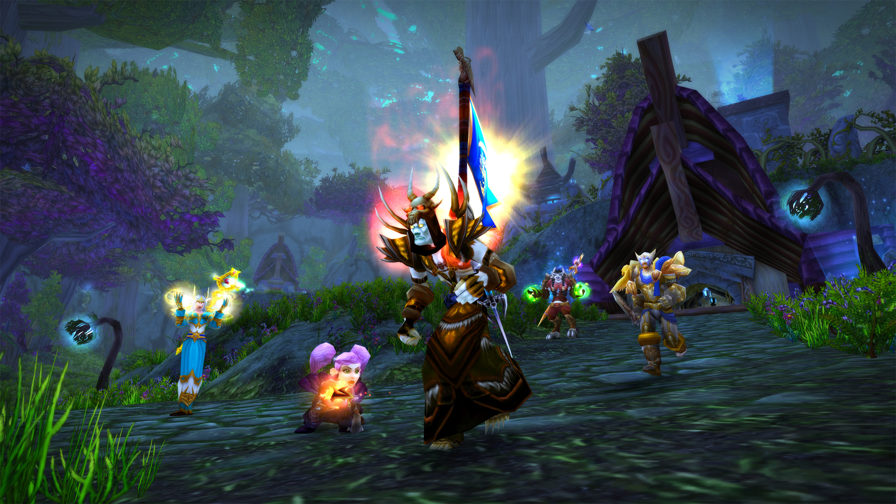

Ganaos las alas y una montura especial de curia en nuestra próxima gran actualización de contenido: Cadenas de Dominación. En lugar de proponeros un logro al estilo «Abrecaminos», como en anteriores expansiones, en Shadowlands aprenderéis a volar desde muy temprano gracias a los nuevos capítulos de la campaña de vuestra curia. Al completar una misión de la trama de «El último sigilo», se os recompensará con recuerdos de cielos sin sol. |
ShadowlandsGrandmasters | ¡El emocionante desenlace de la temporada 1 de Hearthstone Grandmasters 2021 llega este fin de semana! Tras siete semanas consecutivas de torneos regionales individuales, ya se ha cerrado la clasificación y los ocho mejores jugadores de cada región avanzarán al torneo final. ¡Esto es lo que necesitáis saber para estar al tanto de la acción de la temporada 1! |
|  | El sistema de honor de Burning Crusade Classic permite que los jugadores participen en combates JcJ y obtengan recompensas al conseguir puntos de honor, una divisa que se puede acumular y gastar en objetos, armas y armaduras. Un cambio importante es que, en Burning Crusade Classic, no hay un sistema de clasificación relacionado con el sistema de honor, así que ya no hace falta preocuparse por mantener un rango o una posición. |
|
Lo funky y lo dulce se dan cita en el evento de Aniversario de Overwatch de este año: Baptiste con su atuendo más elegante y Junkrat con su conjunto más explosivo y seductor hasta la fecha. Con la celebración del 5.º aniversario ya en marcha, nos hemos reunido con David Kang, ilustrador sénior, para hablar de dos de los nuevos aspectos legendarios: Baptiste funky y Junkrat chuchería. |
AniversarioCataclysm | Reunid a vuestros aliados más leales, viajad a la mazmorra de banda Tierras de Fuego y enfrentaos al Señor Elemental Ragnaros y su séquito durante el Paseo en el tiempo de Cataclysm. Tras la aparición de Alamuerte en Azeroth, Ragnaros y sus sirvientes tomaron las laderas del Monte Hyjal hasta que los valientes defensores de la montaña sagrada detuvieron su avance. |
Puede que conozcáis a Edelweiss por sus apariciones en el Hearthstone Championship Tour y en eventos de primer nivel, o por el longevo podcast Coin Concede, del que ahora es copresentadora. ¡Pero su historia no acaba ahí! Hablamos con Edelweiss sobre perfeccionar habilidades competitivas, crear una comunidad de Hearthstone como podcaster y tabernera y su experiencia como mujer transgénero en el mundo de los videojuegos. ¡Agarrad una silla y acercaos, porque es la hora de la Charla en la taberna! |
||
En el seno de esta novedad se encuentra el cambio de mentalidad en la función de tanque, de lo cual ya se habló durante la BlizzConline, para orientarla más hacia el estilo de juego de un agresor. Se prevé que este cambio, que pasará de centrarse en la protección del equipo a pelear de forma enérgica, tendrá repercusiones en el ritmo de la experiencia JcJ. Durante la retransmisión en directo, pudimos ver de primera mano un nuevo disparo secundario de Winston y ajustes en las habilidades de Reinhardt. |
BlizzConlineOverwacht 2 | Cuatro habitantes del Nexo, provistos de gomaespuma, cola termofusible, telas, máquinas de coser y esa actitud positiva tan inherente a los cosplayers, tomaron la valiente decisión de elaborar y ponerse unos atuendos recreados con cariño e inspirados en sus héroes favoritos de Overwatch. Ahora Valla, Johanna, Raynor y Puntos se han convertido en los héroes que el multiverso jamás había imaginado que necesitaría. |